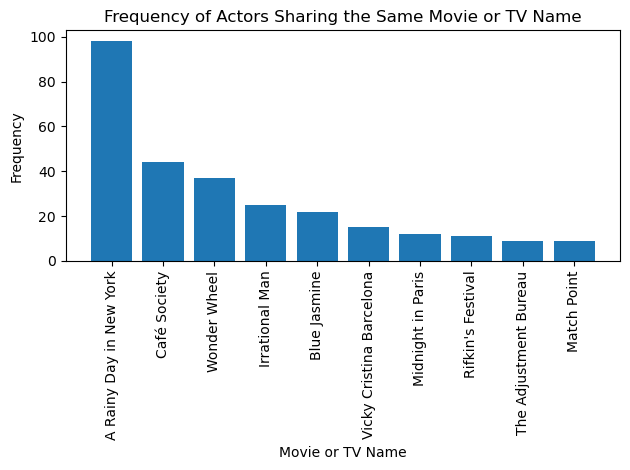

---
title: "Web Scraping on Movie"
author: "Athena Mo"
date: "2024-02-01"
categories: [HW2, scrapy, pandas, matplotlib]
---Web Scraping with Scrapy
In this post, I will be presenting my Scrapy project that is used to scrape my favoriate movie: A Rainy Day in New York - directed by Woody Allen.
Please click the following link to see my project repository:
// Note: The following code is used to display the hyperlink
from IPython.core.display import display, HTML
display(HTML("""<a href="https://github.com/Fishier1224/PIC16B_0/tree/main/TMDB_scraper">Project Repository</a>"""))/var/folders/4g/1nylr1s57nvcbk28gd1y9r0h0000gn/T/ipykernel_22301/3278939308.py:1: DeprecationWarning: Importing display from IPython.core.display is deprecated since IPython 7.14, please import from IPython display
from IPython.core.display import display, HTMLPreparing for Scraping
Begin by entering the following command in your local terminal “scrapy startproject TMDB_scraper”. My project is named TMDB_scraper, but you can name it whatever you wish. This command will create a folder for your scrapy project.
Inside the project folder, you will see another folder named as TMDB_scraper (along with scrapy.cfg). Click in the folder and open settings.py.
In settings.py, you want to include the following code to avoid being blocked by the site because they notice you are scraping (403 error). You may need to first install scrapy-fake-useragent using the following command “pip install scrapy-fake-useragent”.
The following code in settings.py turns off the built in UserAgentMiddleware and RetryMiddleware, then enables scrapy-fake-useragent’s RandomUserAgentMiddleware and RetryUserAgentMiddleware.
DOWNLOADER_MIDDLEWARES = {
'scrapy.downloadermiddlewares.useragent.UserAgentMiddleware': None,
'scrapy.downloadermiddlewares.retry.RetryMiddleware': None,
'scrapy_fake_useragent.middleware.RandomUserAgentMiddleware': 400,
'scrapy_fake_useragent.middleware.RetryUserAgentMiddleware': 401,
}
FAKEUSERAGENT_PROVIDERS = [
'scrapy_fake_useragent.providers.FakeUserAgentProvider', # Trying first provider
'scrapy_fake_useragent.providers.FakerProvider', # If FakeUserAgentProvider fails, use faker to generate a user-agent string
'scrapy_fake_useragent.providers.FixedUserAgentProvider', # Fall back to USER_AGENT value
]
## Set Fallback User-Agent
USER_AGENT = 'Mozilla/5.0 (iPad; CPU OS 12_2 like Mac OS X) AppleWebKit/605.1.15 (KHTML, like Gecko) Mobile/15E148'Notice how there is a fallback User-Agent named USER_AGENT, this is the user agent that the program will fall back on if all providers fails.
Implementing the TmdbSpider class
First, import scrapy. Then create the class TmdbSpider calling “scrapy.Spider”, and assign the name to “tmdb_spider”.
Next, under init, specify the start_url with “f”https://www.themoviedb.org/movie/{subdir}/““. Notice how the subdirectory is provided with f string. This means that we will need to use “scrapy crawl tmdb_spider -o movies.csv -a subdir=475303-a-rainy-day-in-new-york” when we are calling scrapy in the terminal later on.
import scrapy
class TmdbSpider(scrapy.Spider):
name = 'tmdb_spider'
def __init__(self, subdir=None, *args, **kwargs):
self.start_urls = [f"https://www.themoviedb.org/movie/{subdir}/"]Now, our first parse function begins with the cast page of the movie that we are scraping. In this function, we yield the scrapy request to call another function parse_full_credits, which will be used to scape individual casts in the movie. Notice how the url is simply the start_url + /cast.
def parse(self, response):
"""
The main parse function.
sets the url to the cast page of the movie, then calls parse_full_credits to
proceed to individual actors (casts) of the movie.
return: N/A
"""
yield scrapy.Request("https://www.themoviedb.org/movie/475303-a-rainy-day-in-new-york/cast",
callback=self.parse_full_credits)Following, we have the parse_full_credits function. Since the cast actor links on the website html are placed within the li element (written like this in the html: ol class=“people credits”), we first select that portion and assign it to actors.
Then we iterate through the actors to get individual links to the actor’s page using actor.css(‘a::attr(href)’).get(). Next, we check if we are on the actor’s page with if actor_link and calls to the function parse_actor_page for continued parsing.
def parse_full_credits(self, response):
"""
Parsing for actors in the movie, provides link for each.
iterates through the <li> elements to get href attributes (link to each actor)
calls parse_actor_page() when the actor page is reached.
return: N/A
"""
actors = response.css('ol.people.credits li') # Select the <li> elements containing actor information
for actor in actors:
actor_link = actor.css('a::attr(href)').get() # Extract the href attribute of the <a> tag
if actor_link:
yield scrapy.Request(response.urljoin(actor_link), callback=self.parse_actor_page)This is our final parsing function - parse_actor_page. This function assumes that we are at an actor’s page, and begin by extracting the actor’s name. Notice how there is a split in the first line. This is because the website’s html includes an index number for actor’s name and we don’t want that.
The second line selects the known_for section of the page, where all the actor’s well-known works are located. The third line then gets all the title of the well-known works undert the known_for_section. Finally, we iterate through the titles to yield a dictionary where the key is the actor’s name, and the value is the title of individual works that they are known for.
def parse_actor_page(self, response):
"""
Assumes at an actor page. Extracts the actor's name using title::text.
For a single actor, extracts the title of their works under the "known_for" section
iterates through the title to yield a dictionary with actor's name and the name of their work
"""
actor_name = response.css('title::text').get().split(' — ')[0] # Split to get rid of following number index
known_for_section = response.css('#known_for')
titles = known_for_section.css('.title bdi::text').getall()
for title in titles:
yield {"actor": actor_name, 'movie_or_TV_name': title}Running the Spider
Now that we finished implementing the class and three parse functions. Type in the terminal under the same directory as “TMDB_scraper”: scrapy crawl tmdb_spider -o results.csv -a subdir=475303-a-rainy-day-in-new-york.
This line will scrape your website and generate a result.csv file that presents the dictionary.
Some Visualization
Now that we have the results.csv, read the csv file using pandas:
import pandas as pd
results = pd.read_csv("results.csv")Here is a overview of what the result looks like using “results.head()”:
results.head()| actor | movie_or_TV_name | |
|---|---|---|
| 0 | Timothée Chalamet | Call Me by Your Name |
| 1 | Timothée Chalamet | Dune |
| 2 | Timothée Chalamet | The King |
| 3 | Timothée Chalamet | Interstellar |
| 4 | Timothée Chalamet | A Rainy Day in New York |
Now we are going to use matplotlib for an interesting visualization. Begin by importing matplotlib:
import matplotlib.pyplot as pltNow we create a new dataframe based on the results dataframe, named frequency_df. This line groups the results dataframe by ‘movie_or_TV_name’ and count the number of unique ‘actor’ values (the frequency of actors that shares the same ‘movie_or_TV_name’).
frequency_df = results.groupby('movie_or_TV_name')['actor'].nunique().reset_index()Here we rename the columns of our new data frame to “actor” and “frequency”. Then the next line sorts the frequency_df by the ‘frequency’ column in descending order (organizing the movies with the highest frequency to the top of the dataframe).
The third line rests the index to make the dataframe more presentable.
frequency_df = frequency_df.rename(columns={'actor': 'frequency'})
frequency_df = frequency_df.sort_values('frequency', ascending=False)
frequency_df = frequency_df.reset_index(drop=True)Next, to prepare for better plotting, we specify the frequency_df to only include the top 10 highest frequency movies.
frequency_df = frequency_df.head(10)Now we generate the bar chart! First call the x and y variables as “movie_or_TV_name” and “frequency” in the frequency_df dataframe. Then, label the x and y axis as “Movie or TV Name” and “Frequency”. Finally, we label the plot’s title and set the x-axis ticks as “rotation=90”.
At last we display the chart!
plt.bar(frequency_df['movie_or_TV_name'], frequency_df['frequency'])
plt.xlabel('Movie or TV Name')
plt.ylabel('Frequency')
plt.title('Frequency of Actors Sharing the Same Movie or TV Name')
plt.xticks(rotation=90)
plt.tight_layout()
plt.show()